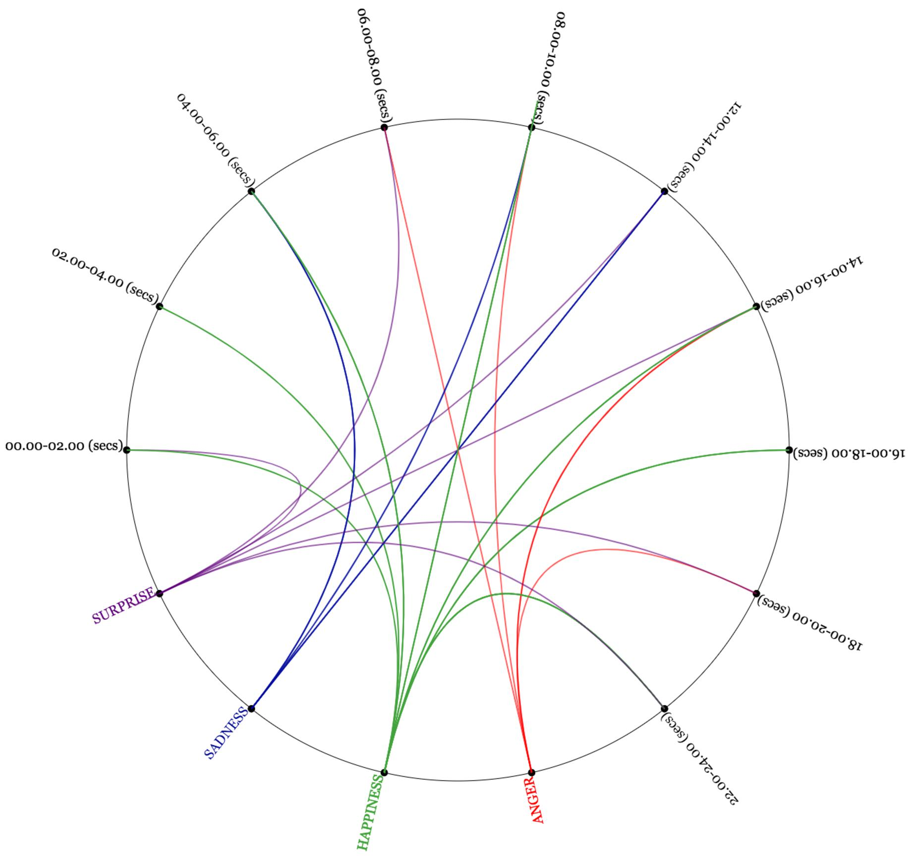
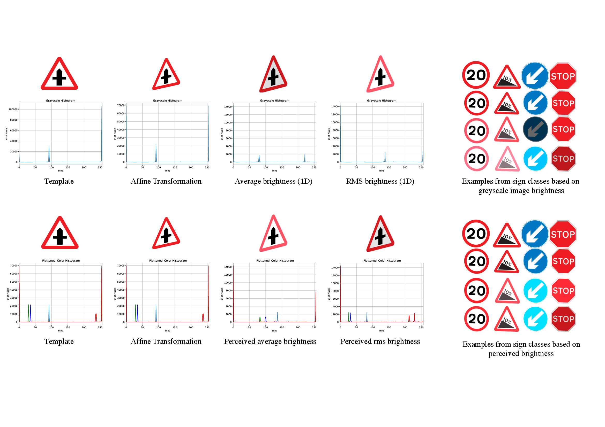
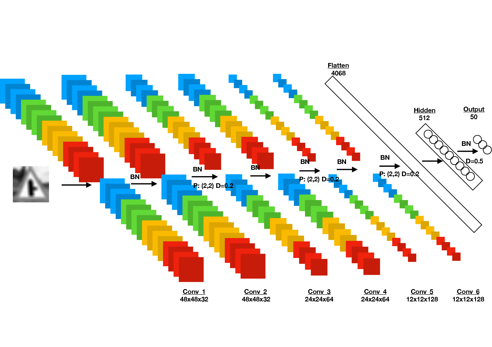
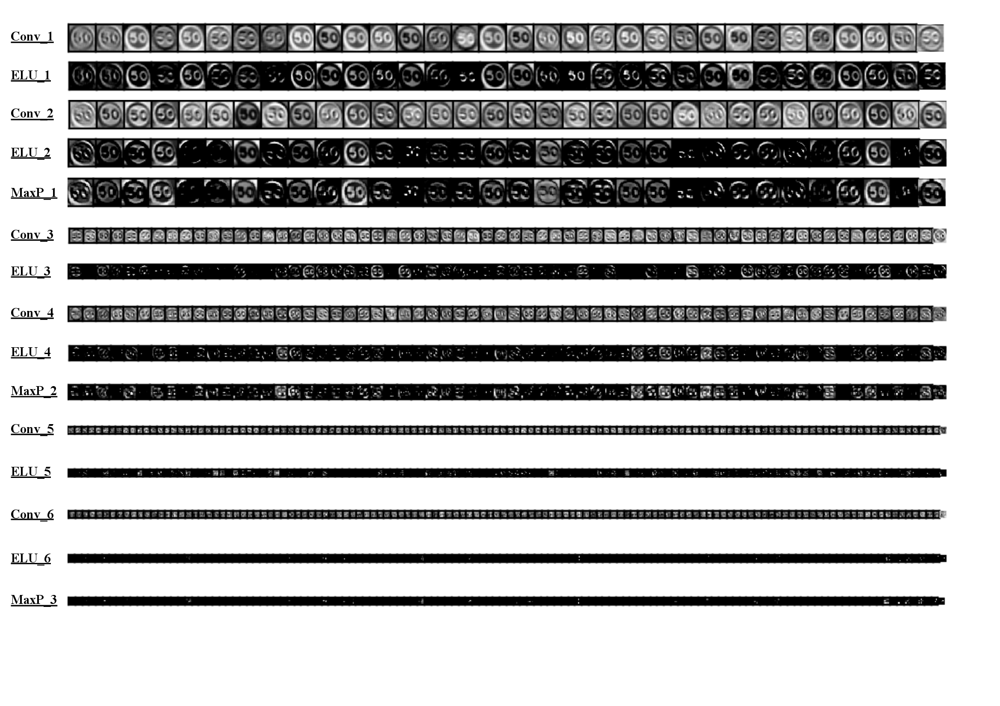
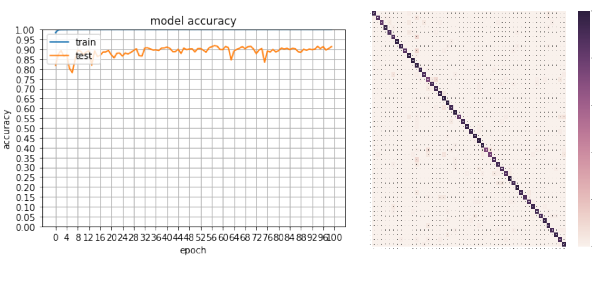
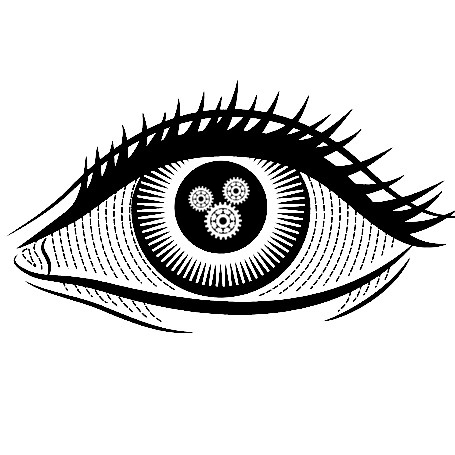

My work is focused on Computer Vision, Machine Learning and Deep Learning
A full list can be found in my GoogleScholar profile.
|
 |
Conceiving Human Interaction by Visualising Depth Data of Head Pose Changes and Emotion Recognition via Facial Expressions
Grigorios Kalliatakis, Alexandros Stergiou, Nikolaos Vidakis [PDF] [code] [bibtex] |
These are some of my latest projects from courses and pet projects.
A main concern of road sign recognition systems has been the use of a large dataset obtained through research and manually finding sufficient data in order to conduct the necessary experiments and optimally create a model with high accuracy rates. The purpose of this dissertation is the introduction of a traffic sign recognition system , which is based on synthetic data generation methods (SGTD), that is not bound to a specific set of road signs as occurring in a country or region, but can generate training examples given a defined set of templates.




This project presents the use of Bootstrapping (or also known as bagging), to normalise the features of the polling population in order to represent the entire population that is eligible to vote. Additionally, for representing connections between individual features during
bootstrapping, a nearest neighbour method is employed in order for the newly created examples to resemble others from the general population. This technique will be applied to data from the 2016 Referendum that held the question of the remain or exit of the United Kingdom from the European Union.
[PDF] [code]
|
 |
INFOMCV Spring 2018 - Computer Vision
Instructor for the Deep Learning/Neural Networks lectures |
© Alexandros Stergiou